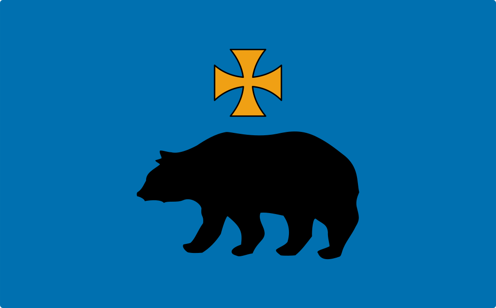
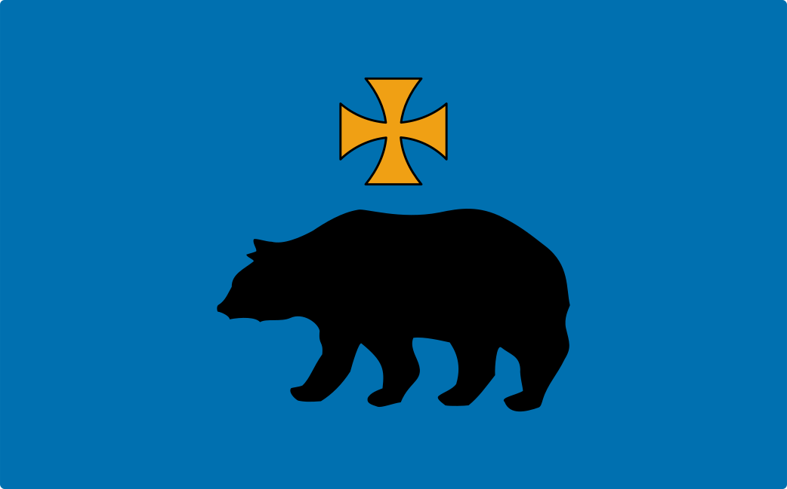

Przemyskie zabytki
Przemyskie zabytki
Informacje Ogólne
Przemyśl (łac. Premislia, ukr. Перемишль, jid. פשעמישל) – miasto na prawach powiatu w południowo-wschodniej Polsce, w województwie podkarpackim, położone nad Sanem przy ujściu Wiaru.
Według danych GUS z 31 grudnia 2019 Przemyśl liczył 60 689 mieszkańców.
Przemyśl był miastem królewskim I Rzeczypospolitej i stolicą ziemi przemyskiej wchodzącej w skład województwa ruskiego. Był miastem stołecznym starostwa przemyskiego w drugiej połowie XVI wieku. W czasach Rzeczypospolitej Obojga Narodów w Przemyślu mieściła się kasa szafarzy podatków dla Rusi. Po odzyskaniu niepodległości przez Polskę od 23 grudnia 1920 do 18 sierpnia 1945 znajdował się na terenie województwa lwowskiego. Od 1945 do 1974 wchodził w skład województwa rzeszowskiego. W latach 1975–1998 siedziba władz województwa przemyskiego. Przemyśl to znaczący węzeł komunikacyjny – trasa międzynarodowa E40, przejście graniczne z Ukrainą w Medyce, duża, graniczna stacja kolejowa (Przemyśl Główny). Miasto jest siedzibą kilku instytucji o znaczeniu ponadlokalnym: podkarpackiego wojewódzkiego konserwatora zabytków, urzędu celno-skarbowego, Bieszczadzkiego Oddziału Straży Granicznej, archiwum państwowego i Wojewódzkiego Ośrodka Ruchu Drogowego.
W 2018 r. zespół staromiejski Przemyśla oraz kompleks Twierdzy Przemyśl zostały wpisane na listę pomników historii.
Miasto posiada kilka muzeów, m.in. Muzeum Archidiecezjalne (zał. 1902) oraz Muzeum Narodowe Ziemi Przemyskiej (zał. 1909).
Położenie geograficzne
Współrzędne geograficzne:
Zakres (dokł. 1 sek.): od 49°44'47" N do 49°49'14" N i od 22°42'46" E do 22°51'20" E
Wartości średnie (dokł. 1 min): 49°47' N 22°47' E
Punkt kanoniczny (Plac na Bramie): 49°46'56" N 22°46'28" E
We wczesnym średniowieczu jeden z historycznych Grodów Czerwieńskich, od 981 przedmiot rywalizacji ze strony Polski, Rusi i Węgier. Następnie m.in. część Rusi Halickiej, a także stolica niezależnego księstwa. Po 1344 stolica rozległej ziemi przemyskiej. Po I rozbiorze Polski w zaborze austriackim, w okresie autonomii galicyjskiej jedno z miast Galicji, przekształcony w trzecią co do wielkości twierdzę w Europie (Twierdza Przemyśl) z garnizonem wojskowym. W latach 1920–1939 w województwie lwowskim, w latach 1945–1975 w województwie rzeszowskim, w latach 1975–1998 stolica województwa przemyskiego. Siedziba starosty powiatu przemyskiego, a także powiat grodzki. Siedziba dwóch metropolii kościelnych Kościoła katolickiego: obrządku łacińskiego oraz wschodniego. Obecnie położony 14 km od granicy z Ukrainą.
Według danych z 1 stycznia 2015 powierzchnia miasta wynosiła 46,17 km².
Zabytki
W Przemyślu znajduje się największa liczba obiektów zabytkowych na obszarze województwie podkarpackiego oraz jedna z największych w skali ogólnopolskiej. Swoją siedzibę ma tutaj Wojewódzki Urząd Ochrony Zabytków.